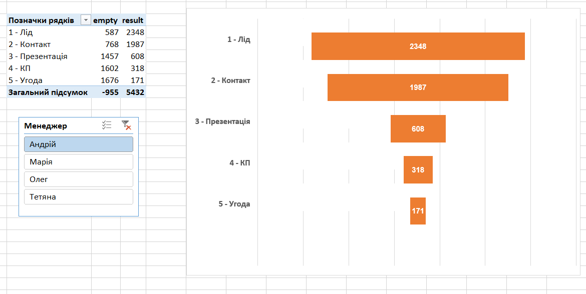

Червень 14, 2024
Потужний проект, у якому я взяв дані про здійснені операції
компанії і створив динамічний звіт P&L. Споживач має
можливість вибірково проаналізувати основні показники порівняно з
бюджетом або минулим роком, для вибраної організації/підрозділу,
за визначений період, з накопиченням з початку року або без. Можна
також легко додати у цей звіт інші зрізи для аналізу.
Для перегляду необхідно становити безкоштовну програму Power Bi Desktop на
Ваш комп.

У цьому проекті я взяв сирі дані про звільнення в iT секторі
очистив і перетворив їх у таблицю, придатну для подальшого
аналізу.
Здійснено первісну очистку і перетворення даних, проаналізовано продажі
велосипедів за період, побудовано зведену таблицю і дашборд, визначено 2 найперспективніші сегменти ринку.
Змістовний звіт про продажі за 2 роки порівняно з бюджетом у
розрізі дат, географії продаж, категорій продукції, продуктів,
менеджерів.
Декілька проектів Python з первісного дослідження і аналізу даних (EDA), А/В тестування,
схожості двох вибірок (груп) покупців (чи можна віднести їх до
однієї групи?)

Ці проекти присвячені побудові воронки продаж і первісного аналізу продаж за
допомогою інструменту Power Pivot (схожим на PowerBi, хоча і дещо
спрощеним).

Проект з об'єднання даних про продажі за декілька періодів з перейменуванням
даних.